CS F364 Assignment 1
Table of Contents
- 1. Problem statement
- 2. DCEL: Doubly Connected Edge List
- 3. Decomposition
- 3.1. Terminology
- 3.2. Algorithm
- 3.3. Time complexity analysis of helper functions
- 3.3.1.
angle(a,b,c): Given three vertices, find the angle between them - 3.3.2.
get_notches: Given a polygon, return a list of notches - 3.3.3.
split_face: Given a diagonal and a face, split the face at the diagonal - 3.3.4.
merge_face: Given two faces, merge and return their combination - 3.3.5.
get_LPVS: Given a list of notches, find the ones in the polygon made by points in
- 3.3.6.
inside_polygon: Check whether a point lies inside a polygon
- 3.3.1.
- 4. Merging
- 5. Benchmarks and Results
- 6. Plots
1. Problem statement
Given an arbitrary polygon, decompose it into a set of convex polygons. We have been given the following paper to implement:
Algorithms for the decomposition of a polygon into convex polygons, European Journal of Operational Research, 121(2), 330-342.
The paper describes three different algorithms for the decomposition of the polygon, we have implement the  algorithm as part of this assignment as well as the merging part that follows.
algorithm as part of this assignment as well as the merging part that follows.
2. DCEL: Doubly Connected Edge List
We have used the DCEL data structure to store our decomposed polygon. DCEL consists of three main sub-data-structures, namely Vertex, Edge and Face.

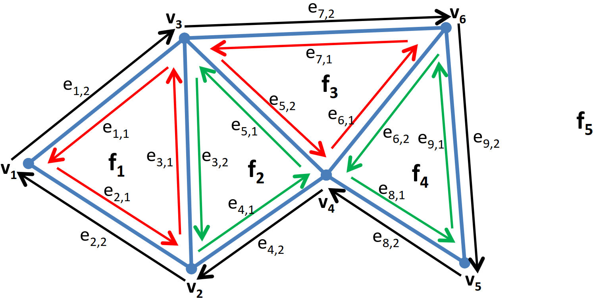
(Images taken from https://www2.cs.sfu.ca/~binay/813.2011/DCEL.pdf)
2.1. Polygon
A decomposed polygon is represented by the Polygon class, which contains a list of vertices of the original polygon in clockwise order, and two Faces which represent the outer and inner faces of the initial, undecomposed polygon.
2.2. Vertex
A vertex contains the coordinates of the point and an IncidentEdge - an edge which originates at the vertex.
2.3. Edge
An edge contains
- A pointer to its twin (edge with the source and destination swapped)
- A pointer to its source vertex (called
origin) - A pointer to the face on its left
- Pointers to its previous and next edges
2.4. Face
A face contains a pointer to any one of the representative edges of the face (if we know one edge we can find all of them by traversing using the next field of the edge)
3. Decomposition
3.1. Terminology
3.1.1. Notch
Angle between 3 points  is said to be a notch if it is greater than
is said to be a notch if it is greater than 
3.1.2. LPVS
 is the list of notches enclosed in
is the list of notches enclosed in 
3.1.3. VTR
Intermediate polygon from which we need to remove
- Notches
- Points lying to the right side of the semiplane formed by the notches and the first point of the initial polygon are to be removed.
3.2. Algorithm
The algorithm relies on successive adding of vertices until the polygon formed by the vertices is not convex. When we cannot add any points to the polygon, we check if any notches are enclosed in the rectangle of minimum area formed by the points added so far. If no notches are present, we create a new polygon by splitting the face of the existing polygon and continue to work on the other half of the newly formed polygon until the number of vertices in our list falls below or equal to - this is the halting condition of the decomposition algorithm. If, in intermediate stages, we notice that notches are present in the rectangle, we remove the notches and the last point of the polygon until we reach a condition where the diagonal formed by the first and the last point does not enclose any other point. We start from the next vertex if we cannot make the polygon.
3.3. Time complexity analysis of helper functions
3.3.1. angle(a,b,c): Given three vertices, find the angle between them
Returns the angle swept by line segment  over
over  counterclockwise. For finding the angle, we calculate the magnitudes of
counterclockwise. For finding the angle, we calculate the magnitudes of  and
and  , and their dot and cross products. We then return different values depending on the sign of the dot and cross products. The time complexity is
, and their dot and cross products. We then return different values depending on the sign of the dot and cross products. The time complexity is 
3.3.2. get_notches: Given a polygon, return a list of notches
We iterate over the vertices of the polygon in clockwise order, checking if the angle  (where
(where  is the current vertex) is reflex. If the angle is reflex, we add it to the list of notches. Finding the angle takes constant time, hence the time complexity for getting all the notches is
is the current vertex) is reflex. If the angle is reflex, we add it to the list of notches. Finding the angle takes constant time, hence the time complexity for getting all the notches is  where
where  is the number of vertices in the polygon.
is the number of vertices in the polygon.
3.3.3. split_face: Given a diagonal and a face, split the face at the diagonal
We iterate over the edges of the face and get the neighbouring edges incident to the diagonal vertices. We do the necessary updates to the next and previous of all the necessary edges. We then create a new face and update its edges so that their left face points to this face. Finally, we return the newly formed face. The time complexity for this process is where is the number of vertices in the polygon due to the linear nature of both the processes.
3.3.4. merge_face: Given two faces, merge and return their combination
We iterate over edges of the first face to find the diagonal between the two faces and perform the necessary updates in the edges. After updation, the left faces of all the edges are updated to the first face and the first face is returned. The time complexity is where is the number of vertices in the polygon.
3.3.5. get_LPVS: Given a list of notches, find the ones in the polygon made by points in
We iterate over all the notches, and check whether they are present in the list  (the polygon being made in the
(the polygon being made in the  iteration) and not in
iteration) and not in  (the undecomposed polygon we are currently working on). The time complexity is
(the undecomposed polygon we are currently working on). The time complexity is  as we have to iterate over and for every notch.
as we have to iterate over and for every notch.
3.3.6. inside_polygon: Check whether a point lies inside a polygon
We iterate over the edges in clockwise order. Every time we find an edge one of whose endpoints is above the given point and the other below, and the point is to the right of the edge, we flip a boolean flag.
This can be done in .
4. Merging
4.1. Terminology
4.1.1. LDP
LDP is an ordered list of boolean flags, ![\(LDP[i]=true\)](/home/chinmay/.local/state/emacs/var/org/persist/1c/2b2b7f-d68b-4297-867b-94d629bcf3f0-0fbe8f5562faa67bb547c7711bbfd4ac.svg) means that the polygon with index
means that the polygon with index  is one of the definitive polygons of the partition after the merging process.
is one of the definitive polygons of the partition after the merging process.
4.1.2. LUP
LUP is an ordered list of integers, ![\(LUP[i]= j\)](/home/chinmay/.local/state/emacs/var/org/persist/10/59eda3-4c98-43b4-81c6-64bb67ca8110-a9640c89b560d791ae72e9b789b36ee6.svg) means that the polygon with index is part of the polygon with index
means that the polygon with index is part of the polygon with index  .
.
4.1.3. LLE
LLE is a list containing the diagonals of the partition.
4.2. Algorithm
We iterate over the list of diagonals (i.e. LLE) and check whether removing the diagonal between two faces disturbs the convexity of the structure. If it does not, then we merge the two faces and update the LDP and LUP lists.
5. Benchmarks and Results
5.0.1. Algeria
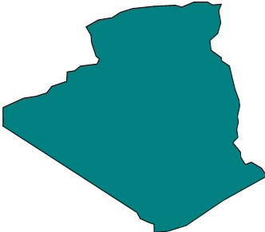
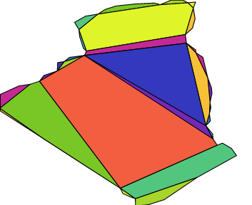

- No. of vertices: 62
- Time to decompose: 4019
 28
28 
- Time to merge: 155 1
- No. of polygons before merging: 29
- No. of polygons after merging: 22
5.0.2. Comb


- No. of vertices: 10
- Time to decompose: 109
 1
1 - Time to merge: 15 0
- No. of polygons before merging: 5
- No. of polygons after merging: 5
5.0.3. Greenland
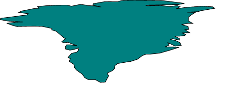


- No. of vertices: 132
- Time to decompose: 26504 59
- Time to merge: 540 3
- No. of polygons before merging: 64
- No. of polygons after merging: 45
5.0.4. Hand


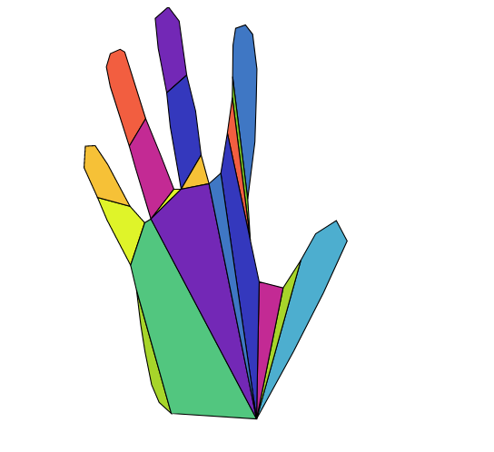
- No. of vertices: 59
- Time to decompose: 3802 8
- Time to merge: 118 1
- No. of polygons before merging: 25
- No. of polygons after merging: 19
5.0.5. i18

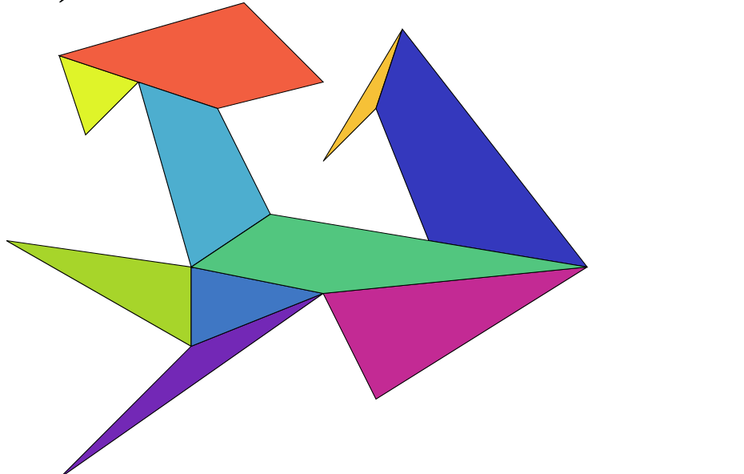

- No. of vertices: 18
- Time to decompose: 555 2
- Time to merge: 41 0
- No. of polygons before merging: 10
- No. of polygons after merging: 9
5.0.6. India
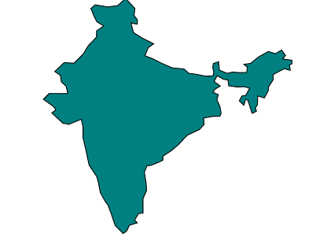
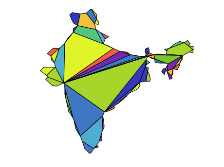
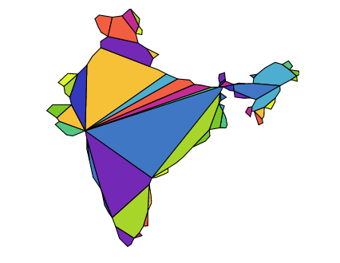
- No. of vertices: 136
- Time to decompose: 46806 179
- Time to merge: 654 3
- No. of polygons before merging: 75
- No. of polygons after merging: 54
5.0.7. Mongolia
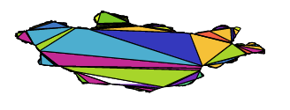
- No. of vertices: 1495
- Time to decompose: 35185674
- Time to merge: 25721
- No. of polygons before merging: 620
- No. of polygons after merging: 429
5.0.8. poly2


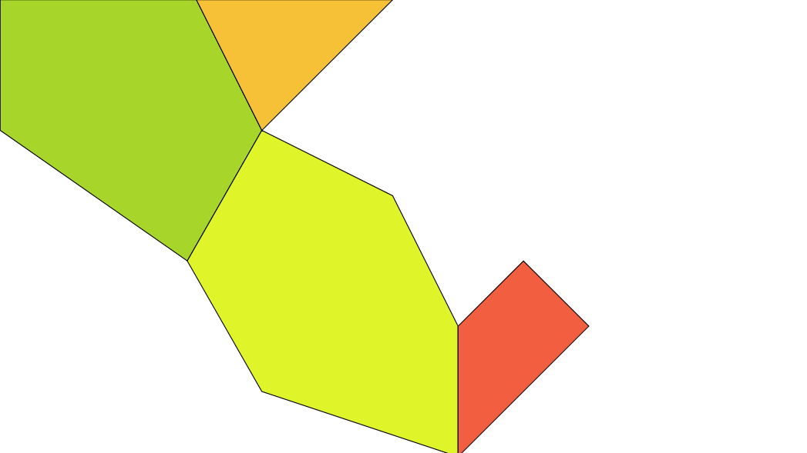
- No. of vertices: 12
- Time to decompose: 148 2
- Time to merge: 31 1
- No. of polygons before merging: 7
- No. of polygons after merging: 4
5.0.9. Snake


- No. of vertices: 12
- Time to decompose: 148 2
- Time to merge: 22 1
- No. of polygons before merging: 6
- No. of polygons after merging: 6
5.0.10. Star


- No. of vertices: 10
- Time to decompose: 125 1
- Time to merge: 20 0
- No. of polygons before merging: 6
- No. of polygons after merging: 5
5.0.11. test2

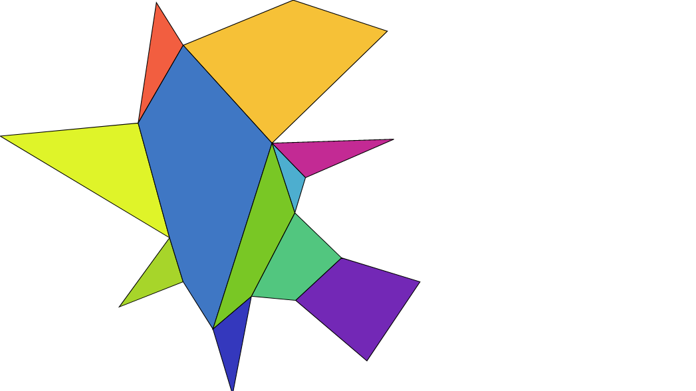
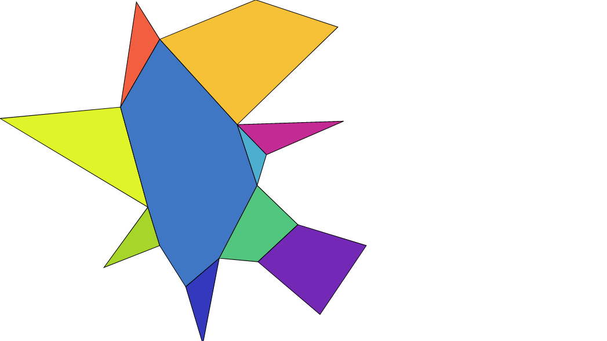
- No. of vertices: 21
- Time to decompose: 535 2
- Time to merge: 37 0
- No. of polygons before merging: 11
- No. of polygons after merging: 10
5.0.12. Monteserrat
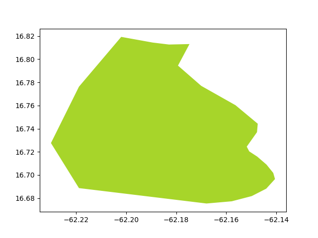
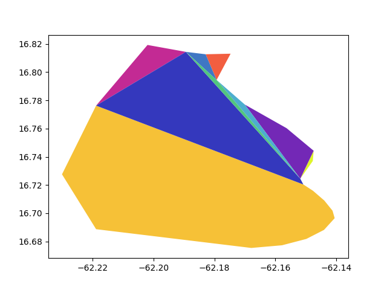
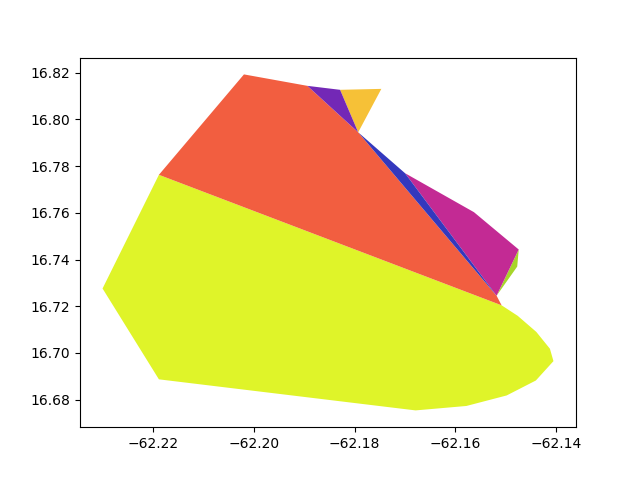
- No. of vertices: 23
- Time to decompose: 300 15
- Time to merge: 34 1
- No. of polygons before merging: 9
- No. of polygons after merging: 7
6. Plots
6.1. Decomposition
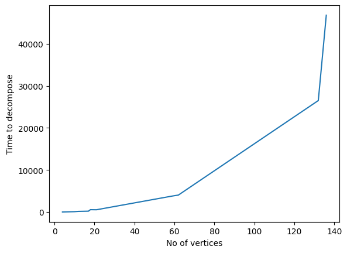
6.2. Merging
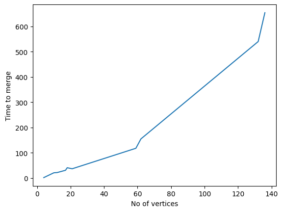